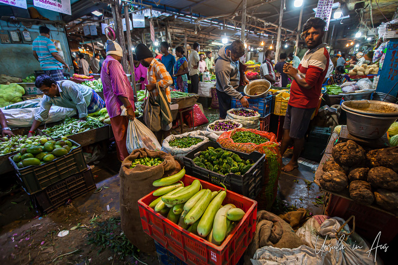

The history of Pondicherry is closely tied to its colonial past. The French East India Company established the town in 1674, and it remained a French colony until it was incorporated into the Indian Union in 1954.
Culture:
Pondicherry is known for its unique blend of Indian and French cultures. The town is characterized by its French Quarter with colonial-style buildings, tree-lined streets, and vibrant markets. Auroville, an experimental township near Pondicherry, is also a notable attraction known for its international community and the Matrimandir, a unique architectural marvel.
Language:
While Tamil is the official language, French is still used in official communication, and a significant portion of the population is bilingual.
Tourist Attractions:
Some popular attractions in Pondicherry include the Promenade Beach, Aurobindo Ashram, Auroville, Paradise Beach, and the French War Memorial.
Spiritual and Wellness Tourism:
Pondicherry is also known as a hub for spiritual seekers and wellness enthusiasts. The Aurobindo Ashram, founded by Sri Aurobindo and the Mother, attracts people from around the world. The town is also known for yoga and meditation retreats.
Cuisine:
Pondicherry offers a diverse culinary experience, combining French and South Indian flavors. Visitors can enjoy a variety of delicious dishes, including French pastries and South Indian seafood.
10 Places to Visit in Pondicherry:
Promenade Beach:
A scenic seafront promenade along the Bay of Bengal.
Auroville:
An experimental township focused on unity, peace, and sustainable living.
Aurobindo Ashram:
by Sri Aurobindo and the Mother, a spiritual retreat offering meditation and yoga sessions.
Paradise Beach:
Accessible by boat, this pristine beach is surrounded by mangrove forests.
French Quarter (White Town):
Characterized by colonial-era architecture, tree-lined streets, and vibrant colors.
Botanical Gardens:
Established in 1826, showcasing a diverse collection of exotic plants.
Chunnambar Boathouse (Puducherry Beach):
Offers boat rides along the Chunnambar River, leading to the backwaters.
Sri Manakula Vinayagar Temple:
A historic Hindu temple dedicated to Lord Ganesha.
Jawahar Toy Museum:
Displays a unique collection of toys and dolls from different states of India.
Goubert Market:
A bustling market where you can experience the local culture.
Promenade Beach
Promenade Beach, located in Puducherry, India, is a picturesque and popular waterfront destination known for its serene atmosphere and vibrant cultural vibes. Stretching along the Bay of Bengal, the beach features a long promenade where locals and tourists alike enjoy leisurely strolls, taking in the fresh sea breeze and stunning views. Lined with palm trees and colonial-style buildings, the promenade offers a blend of natural beauty and historical charm. Visitors can engage in various activities, from beach volleyball to enjoying street food from the numerous stalls. As the sun sets, Promenade Beach transforms into a captivating spot, with the colorful sky enhancing the overall enchanting experience.
Auroville
Auroville is an experimental and intentional community located in Tamil Nadu, India. Founded in 1968 by Mirra Alfassa, known as "The Mother," and designed by architect Roger Anger, Auroville aims to be a universal town where people from diverse backgrounds live together in harmony. It emphasizes spiritual development, sustainable living, and the integration of humanity beyond nationality, religion, and politics. Auroville is recognized for its distinctive architecture, eco-friendly practices, and its commitment to fostering human unity and collective well-being. Visitors often explore its unique culture, attend meditation sessions, and appreciate the community's dedication to peace and progress.
Aurobindo Ashram
Aurobindo Ashram, located in Pondicherry, India, is a spiritual community founded by Sri Aurobindo and the Mother (Mirra Alfassa) in the early 20th century. The ashram is dedicated to the integral yoga philosophy, emphasizing the synthesis of spiritual, mental, and physical aspects of life. It serves as a center for meditation, self-discovery, and personal transformation. The teachings focus on the evolution of consciousness and the pursuit of a divine life. Auroville, an international township dedicated to human unity and spiritual progress, also emerged in proximity to the ashram.
Paradise Beach
Paradise Beach, located in Puducherry (formerly known as Pondicherry), is a serene and pristine destination along the southeastern coast of India. Known for its crystal-clear turquoise waters and golden sandy shores, Paradise Beach offers a tranquil escape from the hustle and bustle of city life. Accessible by a short boat ride from Chunnambar Boat House, the beach is surrounded by lush greenery and provides a perfect setting for relaxation and water activities. Visitors can enjoy sunbathing, swimming, and beach games while taking in the breathtaking views of the Bay of Bengal. The unspoiled beauty and peaceful ambiance make Paradise Beach a must-visit destination for nature lovers and those seeking a tranquil coastal retreat.
French Quarter (White Town)
Puducherry, often referred to as the "White Town," encompasses the charming French Quarter known for its colonial architecture and picturesque streets. The area showcases a unique blend of French and Indian cultures, evident in its vibrant colors and colonial-style buildings. Strolling through the cobbled streets, visitors encounter colonial-era mansions, boutiques, and cafes, creating an atmospheric and nostalgic ambiance. The French Quarter is a hub for art and culture, featuring galleries, museums, and vibrant street art. With its distinct character and laid-back atmosphere, the French Quarter stands as a testament to Puducherry's rich colonial history.
Botanical Gardens
Poinciana, or more commonly known as Pointe d'Esny, is home to the enchanting Botanical Gardens. Nestled in the heart of this coastal village, the garden is a haven for plant enthusiasts and nature lovers alike. Its lush greenery and diverse flora showcase the rich biodiversity of the region. Visitors can explore themed sections, from tropical rainforests to succulent gardens, providing a serene and educational experience. The Botanical Gardens in Pointe d'Esny offer a peaceful retreat, inviting guests to appreciate the beauty of nature in this picturesque setting.
Chunnambar Boathouse (Puducherry Beach)
Chunnambar Boathouse, located in Pondicherry, is a picturesque getaway along the east coast of India. Nestled at the confluence of the Chunnambar River and the Bay of Bengal, the boathouse offers serene boat rides through the backwaters surrounded by lush greenery. Visitors can enjoy the pristine sandy beach, indulge in water sports, and relish the tranquility of the surroundings. The boathouse is an ideal destination for nature enthusiasts and those seeking a peaceful retreat, providing a perfect blend of coastal beauty and recreational activities in the heart of Puducherry.
Sri Manakula Vinayagar Temple
The Jawahar Toy Museum in Pondicherry is a captivating showcase of traditional and contemporary toys, offering visitors a delightful journey through the world of play. With a diverse collection that reflects the rich cultural heritage of India, the museum provides insight into the craftsmanship and artistic skills behind these toys. Established to preserve and celebrate the country's toy-making traditions, the Jawahar Toy Museum is a family-friendly destination that offers a unique blend of education and entertainment, making it a must-visit attraction for those interested in the cultural history of Indian toys.
Goubert Market

As of my last knowledge update in January 2022, Goubert Market, located in the Union Territory of Puducherry (formerly known as Pondicherry), is a historic market known for its vibrant atmosphere and diverse range of goods. Established during the French colonial period, the market showcases a unique blend of Indian and French influences. Visitors can explore a variety of stalls offering fresh produce, spices, textiles, and handicrafts. The market is a popular destination for both locals and tourists, providing an authentic experience of the region's cultural and culinary richness. It serves as a hub for residents to shop for daily necessities and for tourists to immerse themselves in the local flavors and traditions. Please note that details may have changed since my last update, so it's advisable to check for the latest information if needed.